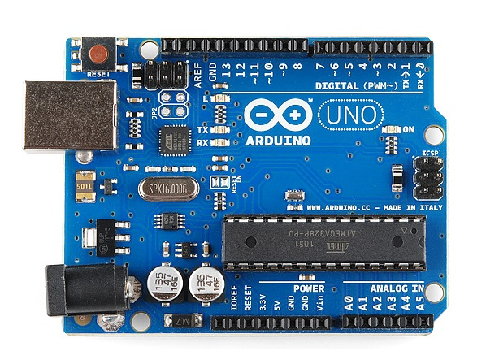
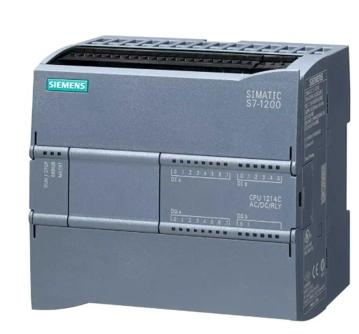
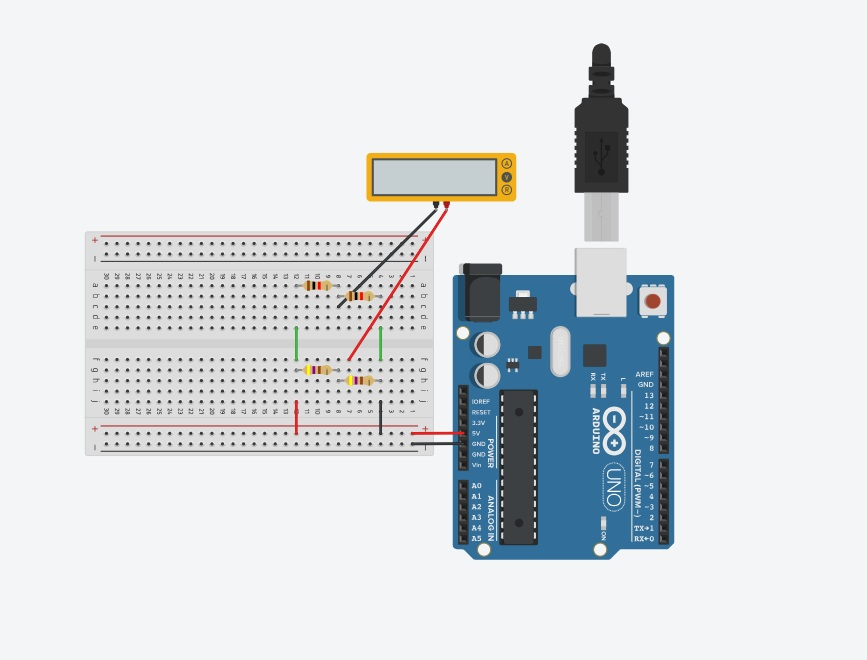
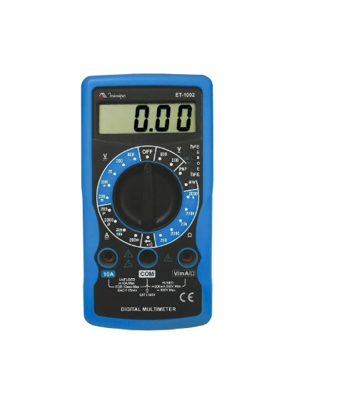

By Kristopher © ™
O que é um Arduino?
Arduino é uma plataforma de prototipagem eletrônica de código aberto (open-source) que combina uma placa de hardware (com microcontrolador) e um ambiente de desenvolvimento (IDE). Ideal para iniciantes e profissionais, permite criar projetos automatizados, robôs e sensores, recebendo informações do ambiente e controlando atuadores, motores e luzes.
Qual é a escala analógica do Arduino?
A escala analógica padrão na maioria das placas Arduino (como o Arduino Uno, Nano e Mega) é de 10 bits.
Isso significa que, ao ler um sinal analógico usando o comando analogRead, o Arduino converte a tensão de entrada em um valor numérico inteiro que varia de 0 a 1023.
O que é a entrada analogica e digital no Arduino?
Entradas digitais no Arduino leem dois estados(ligado/desligado, high/low), ideias para sensores binários e botões. Entradas analógicas leem tensões continuas (0V a 5V), convertendo em valores de 0 a 1023(10-bit), e a saída é de 0 a 255.
Como o PWM funciona?
0% Duty Cycle: O pino fica desligado o tempo todo (0V).
25% Duty Cycle: O pino fica ligado 25% do tempo e desligado 75%. A tensão média será de 1,25V.
50% Duty Cycle: Metade do tempo ligado, metade desligado. A tensão média será de 2,5V (o LED brilhará com metade da intensidade).
100% Duty Cycle: O pino fica ligado o tempo todo (5V).

Retirado de: Arduino
O que é CLP? (Modelo da CPU 1214c do tipo DC/DC/DC)
CLP, ou Controlador Lógico Programável, é um computador industrial robusto projetado para automatizar máquinas e processos, operando em ambientes agressivos com poeira, calor e vibração. Ele monitora entradas (sensores), processa uma lógica programável e aciona saídas (motores, válvulas) para controlar linhas de produção.
O que significa "DC/DC/DC"?
Primeiro DC (Alimentação): A CPU é alimentada por corrente contínua (24V DC). Diferente de alguns modelos que ligam direto no 110/220V (AC), este exige uma fonte externa.
Segundo DC (Entradas): As entradas digitais esperam sinais de 24V DC. Quando um sensor envia 24V para o pino, o CLP entende como "ligado" (nível lógico 1).
Terceiro DC (Saídas): As saídas são do tipo Transistor (24V DC).
Vantagem: Permite frequências de chaveamento altíssimas (ideal para controle de motores de passo ou PWM).
Limitação: Diferente da saída a Relé (RLY), ela não suporta cargas de alta corrente ou tensões diferentes de 24V diretamente.
Características da CPU 1214C
Entradas Digitais: 14 entradas integradas (24V DC).
Saídas Digitais: 10 saídas integradas (Transistor).
Entradas Analógicas: 2 entradas (0-10V DC) integradas para ler sensores de pressão, temperatura, etc.

Retirado de: CLP
O que é a entrada analogica e digital no CLP?
Entradas de CLP (Controlador Logico Programável) são os pontos de conexão de sinais externos. A entrada digital lê apenas dois estados (ligado/desligado, 0 ou 1), como botões e sensores indutivos.
Analógica: valores contínuos (ex: 0–10V, 4–20mA)
Digital: sinais discretos (botão pressionado ou não)
O que é a ponte de Wheatstone?
A Ponte de Wheatstone é um circuito elétrico utilizado para medir com alta precisão o valor de uma resistência elétrica desconhecida. Desenvolvida por Samuel Hunter Christie em 1833 e popularizada por Charles Wheatstone em 1843, ela baseia-se no princípio do equilíbrio de potenciais em um arranjo de quatro resistores.

Exemplo no Tinkercad:

O circuito é composto por quatro resistores conectados em formato de "losango", alimentados por uma fonte de tensão contínua. No centro (entre os ramos), conecta-se um instrumento sensível chamado galvanômetro.
O que é um multímetro
Um multímetro é uma ferramenta essencial de diagnóstico para quem trabalha com eletricidade ou eletrônica. Ele combina várias funções de medição em uma única unidade, permitindo que você verifique se um circuito está funcionando corretamente ou identifique falhas.

Retirado de: Multímetro
Grandezas Principais
Estas são as funções que todo multímetro, do mais simples ao profissional, possui:
Tensão (Volts - V): Mede a "pressão" elétrica.
V~ (ACV): Tensão Alternada (tomadas, redes elétricas residenciais).
V⎓ (DCV): Tensão Contínua (pilhas, baterias, circuitos eletrônicos).
Corrente (Amperes - A): Mede o "fluxo" de elétrons passando por um condutor.
Assim como a tensão, pode ser Alternada (A~) ou Contínua (A⎓). Atenção: Medir corrente exige que o multímetro esteja em série com o circuito.
Resistência (Ohms - Ω): Mede o quanto um componente dificulta a passagem da corrente. É usada para testar resistores, bobinas e cabos.
Funções de Diagnóstico
Além das unidades de medida, existem escalas para testes rápidos:
Continuidade (Som de "Bip"): Serve para saber se um fio está rompido ou se há conexão entre dois pontos. Se apitar, o caminho está livre.
Diodo (seta com um traço): Usado para testar semicondutores e saber se a corrente está fluindo apenas para um lado, como deveria.